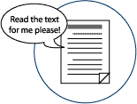

Index
- Description
- Points to ponder
- Windows Based Software
- Macintosh Based Software
- Stand Alone Text to Speech Tools
- Resources and Tutorials
This list of products is for reference purposes only and does not reflect endorsement by the IDRC.
Description
Text-to-Speech software is used to convert words from a computer document (e.g. word processor document, web page) into audible speech spoken through the computer speaker. This software would be helpful to people who need or want aural verification of what they are seeing in print. Text-to-speech technology can be integrated with OCR systems. Text to Speech software is different from Screen Reading technology in that it does not read any system information (such as file structure or alt boxes)
Note that with software that produces a "sound" or voice output, you also need a PC compatible sound card [which usually comes with Pentium based computers]
Points to ponder - Questions to consider when shopping for text-to-speech software
- Is it compatible with your computer's platform?
- Can it save to .wav or .mp3 formats for later listening?
- What file formats does it support?
- Is it Internet-compatible?
- Can it scan from a printed page (optical character recognition)?
- Does it have multi-language support?
- Can the reading voice be adjusted and/or trained?
Windows Based Software
- WordTalk is a free plug-in developed for use with all versions of Microsoft Word (from Word 97 upwards), which can help people with reading difficulties use Microsoft Word more effectively. It will speak the text of the document and will highlight it as it goes. It contains a talking dictionary to help decide which word spelling is most appropriate. It sits neatly in your toolbar and is highly configurable, allowing you to adjust the highlight colours, the voice and the speed of the speech.
- ReadPlease 2003 is a free text to speech package for Windows 95/98/ME/NT/2000/XP.
- There is also a version for the web called ReadingBar 2
- Sayz Me is a free text-to-speech reader for Windows. Text is typed in or copied from the clipboard and then read aloud. Words are highlighted as they are spoken.
- TextAloud MP3 converts any text into spoken words and MP3 files
- Files may be listened to immediately, or save to .wav or MP3 files to hear later at your convenience
- TextAloud can be tried for 15 days free by downloading a fully functional demo at the Next Up Technology Home Page
- NaturalReader is a Text to Speech software with natural sounding voices. This easy to use software can convert any written text such as MS Word, Webpage, PDF files, and Emails into spoken words. NaturalReader can also convert any written text into audio files such as MP3 or WAV for your CD player or iPod.
- Acapela Group has a variety of text to speech products:
- BrightSpeech TTS - part of Acapela's "High Quality text to speech" line
- Elan Sayso TTS - part of Acapela's "High Quality text to speech" line
- Babil TTS - part of Acapela's "High Density text to speech" line
- Elan Tempo TTS - part of Acapela's "High Density text to speech" line
- Text-To-Speech Systems by Lucent Technologies is available in the following Languages- English(American) , German , Chinese(Mandarin) , Spanish , French and Italian
- Clip&Talk for Windows 3.1x/95/98/NT, Windows compatible sound card
- Add speech capability to Windows applications. Designed to work with any application that can put text on the 'clipboard'.
- Free downloadable trial version which reads up to 600 words
- WinSpeech for Windows 3.1x) / 3.0N (for Windows 95/98/NT) is also available from PC WholeWare.
- Will read in text files and convert each word to a phonetic equivalent for more natural sounding speech.
- Supports DDE so that other Windows applications can send text to it for reading. Expandable dictionary.
- Free downloadable trial version.
- "Help Read" from The Hawaii Education Literacy Project
- Will automatically read clipboard text or .txt documents.
- Supports both English and Hawaiian Language.
- TextHelp Systems Inc.
- Read&Write Series
- Read&Write Standard - includes speech feedback, phonetic spell checking, word prediction & homophone support, customizable 'floating' toolbar, study skills, teacher toolkit and Daisy Reader Application.
- Read&Write GOLD - all the features of Standard plus an integrated toolbar and some other features - supports Windows Vista
- Read&Write GOLD Mobile - Gold Edition on a portable smart drive that allows you to use Read&Write GOLD on any computer without installation - for Windows 2000/XP
- Read&Write GOLD Deluxe - Gold Edition plus two features for teachers and staff: Testmaker and PDF Accessibility Editor.
- Read&Write Product Comparision Matrix
- Lexiflow - publishing tool for generating Flash pages from PDF Files (multiple languages) - for Windows and Mac
- AT&T Text-to-Speech web site.
- A demo of text-to-speech
- Definition and vision of text-to-speech application
- TextSound 1.0 by ByteCool Software
- Converts text files to wav format
- Handles batch conversions
- Recognizes voices from a number of other text to speech software packages
- Free trial download available from web site
- "AspireREADER 4.0 " - enhanced version of the Cast E-Reader 3.0 from Cast
- DECtalk for Linux *move link to Linux Accessibility page in Technical Glossary
Macintosh Based Software
- Read&Write GOLD for Mac: includes speech feedback, phonetic spell check, word prediction & homophone support, study skills tool, Safari (Web) Reader and Daisy Reader Application.
- Proloquo 1.1 from AssistiveWare - multi-lingual text-to-speech software, with a wide variety of voices and languages
- Plaintalk 1.5.4 shareware, (download page @ tucows.com), also see the Apple page for Plaintalk
- Mary Text-to-Speech System is an open source text-to-speech software that includes English and Tibetan
- Lexiflow - publishing tool for generating Flash pages from PDF Files (multiple languages) - for Windows and Mac
Stand Alone Text to Speech Tools
- QuickLink-Pen and QuickLink-Pen Elite by WizCom Technologies USA
- This "reading pen" is a portable pen shaped device that can scan a word and read it to the user
- The Quick Link scans English, German, Swedish, Portuguese, Spanish, Italian and French
- DECtalk 5.0 text-to-speech synthesizers from Fonix Speech
- DECtalk 5.0 is a multi-lingual text-to speech technology- for Windows, Linux, Solaris and some "no OS" implementations.
- DECtalk 4.6.4 - the "classic DECtalk" re-released with improved text-to-speech and compatibility with additional operating systems.
Resources
- Dyslexic.com has a good reference page for books and software tools that you might find helpful
- The LD Resources website is a repository of resources for people with learning disabilities. A recent site overhaul has significantly added to the resources and organization of the content.
- Bell Labs Text-to-Speech site.
- Allows you to enter text online and explore text-to-speech.
- links to some of the other text to speech and voice recognition products at Bell labs.